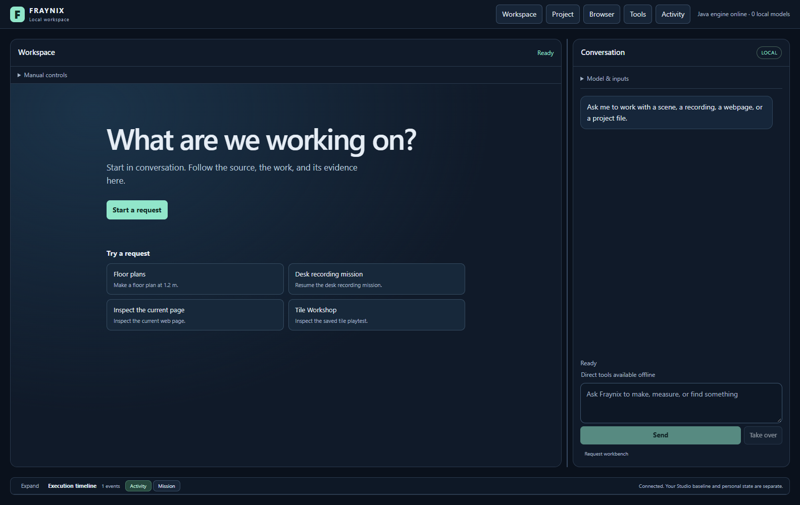
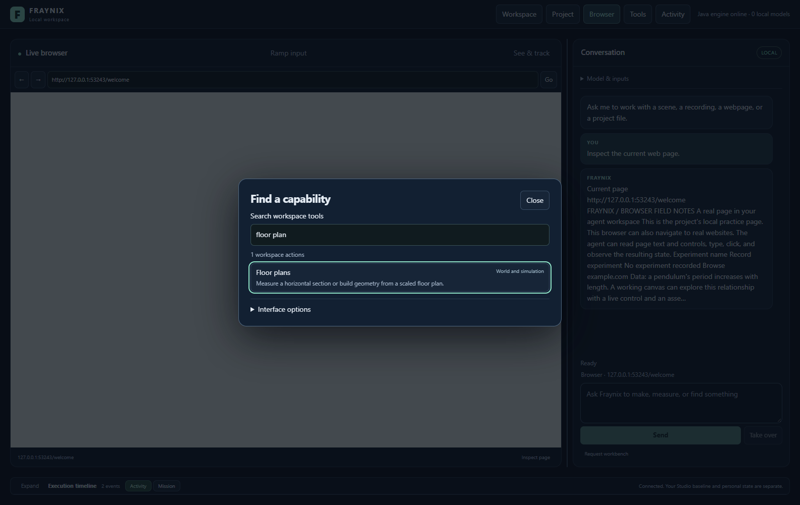
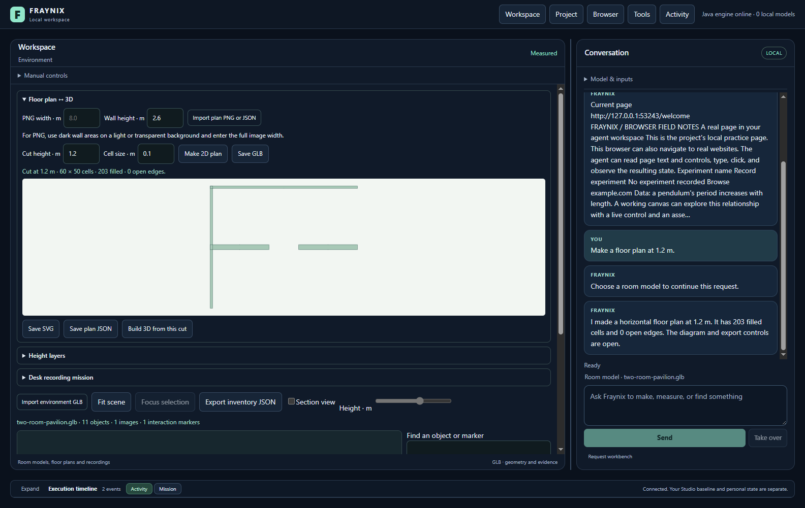
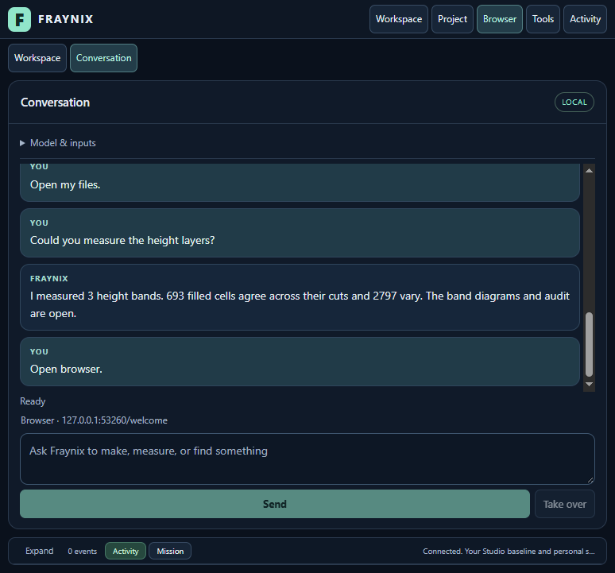

One workspace for chat, tools and results
Ask from a single conversation. See tools, required inputs and results in the active workspace.

Start in one workspace with conversation and task suggestions

Search actions and registered Java tools from the launcher

Resume a request with a selected model and see the result beside chat

Keep the composer within reach in the compact layout
System files
Open source